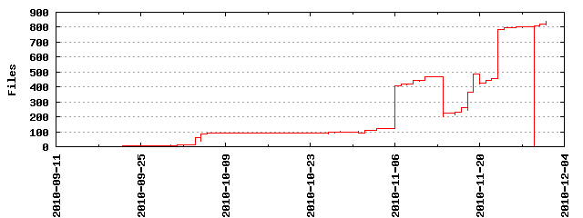

Files
- Total files
- 370
- Total lines
- 34092
- Average file size
- 9214.05 bytes

| Extension | Files (%) | Lines (%) | Lines/file |
|---|
| 26 (7.03%) | 2815 (8.26%) | 108 |
| 1 | 1 (0.27%) | 12 (0.04%) | 12 |
| 10 | 1 (0.27%) | 20 (0.06%) | 20 |
| aux | 2 (0.54%) | 6 (0.02%) | 3 |
| c | 2 (0.54%) | 3429 (10.06%) | 1714 |
| cpp | 9 (2.43%) | 783 (2.30%) | 87 |
| css | 8 (2.16%) | 2256 (6.62%) | 282 |
| dat | 1 (0.27%) | 21 (0.06%) | 21 |
| dia | 32 (8.65%) | 4180 (12.26%) | 130 |
| dia~ | 7 (1.89%) | 61 (0.18%) | 8 |
| doc | 1 (0.27%) | 163 (0.48%) | 163 |
| docx | 3 (0.81%) | 302 (0.89%) | 100 |
| dvi | 2 (0.54%) | 0 (0.00%) | 0 |
| gif | 39 (10.54%) | 53 (0.16%) | 1 |
| gusdb | 1 (0.27%) | 3 (0.01%) | 3 |
| h | 6 (1.62%) | 319 (0.94%) | 53 |
| htm | 3 (0.81%) | 1146 (3.36%) | 382 |
| html | 26 (7.03%) | 3088 (9.06%) | 118 |
| html~ | 1 (0.27%) | 56 (0.16%) | 56 |
| java | 2 (0.54%) | 100 (0.29%) | 50 |
| jpg | 2 (0.54%) | 294 (0.86%) | 147 |
| js | 22 (5.95%) | 8508 (24.96%) | 386 |
| l | 1 (0.27%) | 25 (0.07%) | 25 |
| lex | 1 (0.27%) | 50 (0.15%) | 50 |
| log | 2 (0.54%) | 734 (2.15%) | 367 |
| out | 2 (0.54%) | 21 (0.06%) | 10 |
| pdf | 29 (7.84%) | 21354 (62.64%) | 736 |
| php | 8 (2.16%) | 209 (0.61%) | 26 |
| png | 44 (11.89%) | 6405 (18.79%) | 145 |
| ps | 1 (0.27%) | 1351 (3.96%) | 1351 |
| py | 31 (8.38%) | 1334 (3.91%) | 43 |
| pyc | 16 (4.32%) | 200 (0.59%) | 12 |
| save | 2 (0.54%) | 33 (0.10%) | 16 |
| sh | 1 (0.27%) | 10 (0.03%) | 10 |
| swp | 3 (0.81%) | 18 (0.05%) | 6 |
| tar | 2 (0.54%) | 13056 (38.30%) | 6528 |
| tex | 13 (3.51%) | 4060 (11.91%) | 312 |
| txt | 15 (4.05%) | 852 (2.50%) | 56 |
| y | 1 (0.27%) | 64 (0.19%) | 64 |